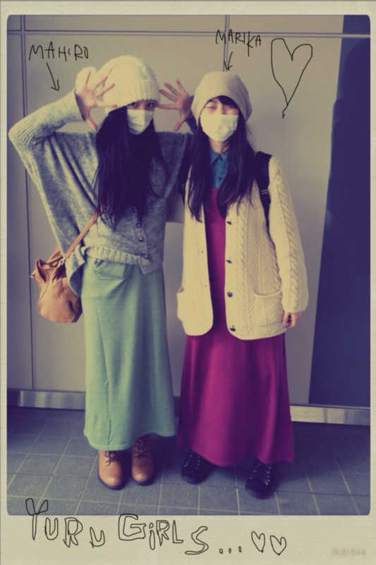
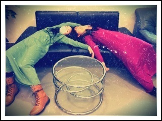

| 2012/02 17 Fri | 78回目*marika |
いつも読んでくださってる方、
初めて読んでくださった方、
コメントしてくださった方、
ありがとうございます!!
はりきっていくぜっっっ
...................
・まりりがもし乃木坂入ってなくて
普通のjkだったら部活してた？
それかバイト？するとしたら
何の部活かバイト？(^^)
*****
乃木坂に入ってなかったら
ずっとバレエやってただろうな＊
だから、変わらず帰宅部だろう^^
バイトやりたい!!
ティッシュ配り!!!!←
・好きな顔文字
( ^o^ )← こういうの
おしえて っ
*****
それかっ笑
ん〜じゃあこれっ↓
(^^)
(´･_･`)
・べびたん、北海道のイメージってどんな感じ？
*****
一年中まっしろで
空気がおいしい。
海の幸、ぷりぷりしてる。
お土産は白い恋人。
考えたらもっと楽しみになってきた♡”
・おれサッカー観戦大好きなんだけど、
ﾍﾞﾋﾞたんって好きなサッカーチームとかあるかな!?
*****
なでしこ:-D
・べびたん買ってる雑誌ある？
*****
FUDGE,FUDGEsis !!
立ち読みもします;D
mini,JILLEも読みますっ♡
・まりかちゃんはどうして
乃木坂に入ろうと思ったの～？
*****
今まで感度かオーディションを
受けたことがあったのですが、
乃木坂46は最後の挑戦!!と思って受けました*
・いつもコメントしてる○○ですっていったらわかる？
*****
分かります!!
いつもコメントありがとうございますっ♡
・明日死んでしまうなら今日なにするー？
*****
°◇° !!!!!?
家族全員集合する!!!!!
そしてイベントやって歌って踊りまくる!!!!!
・これからもコメしていい♡？よね！へへ
*****
うれしいうれしい♡♡
ありがとうございます><へへ
・ベビたんは『どのようなファンに好感を持ちますか？』
*****
乃木坂46、そして私にちょっとでも
好感をもってくださるだけでとてもうれしいです ^^
理由関係なく、乃木坂familyだいすき♡
・今度ベビたんに会ったとき、
こっそりひざカックンしてもいいかな？ 笑
*****
そうはさせないぜ。
はっはっは
なぜなら私は.....
こほん。
))
・柿ピーは好きですか？
*****
おつまみの定番じゃあありませんかあぁぁ!!
もちろんすきすきっっ♡
あったらばりばりむしゃむしゃ。←
・ねねころ、最近大人っぽくなったと思わない？
*****
ねねはずっと大人っぽいです。
でもな〜...最近はな〜...
動いてるねねちゃん見ると
すんごいきゅんきゅんするんだよな〜......
あの子は何をしてもかわいいですね。
きゅん殺しされます。
ってまってまって!
私は大人っぽくなってないん...??笑
・個別握手会まで待てないよ～!!
どうしたらいいですか？
・会いたい病発症してるんだけど特効薬ってあるのかな？
*****
今みなさんに会うためにめっちゃ頑張ってます!
残念ながら特効薬はありません。
会いたいって思ったらずっとそのままなの; ;
私もなってるもん、
ずっと乃木坂familyに会いたいて思ってるもん。
会いたいって思い続けた分、
私は会えたときのうれしさが爆発して
テンション高まりかになって
もっとうれしくなるんです!!♡
だからそのまま思い続けてね?
会えるのを楽しみにしてますx)
・べびたんって変顔のレパートリーどれくらいあるの？
いつもべびたん以外には寧々ちゃんと
せいたんのブログ読んでるんだけど
写メ見るとべびたんっていつも真ん中で変顔だよね！笑
*****
そーんなことないがなっ° °!!
レパートリー...数えたらけっこうあるね笑
ちょっと,
変な顔より
かあいらしい顔の練習しよ。←
今日はここまで
...................
これまひろと私服かぶってん!!
駅に着くまで気づかなかったけど
おんなじ電車乗っててん!!

実はそろえよう
て計画して...
うそよん笑
畠中さんがモケケと遊び終わって
ソファにぽいってやった後のモケケたちの画。

みどりのモケケとピンクのモケケ
撮影の後、
せっちゃんとデイトしてきた♡♡

あは。
せっちゃんツボ。!!
すっきゃわ〜〜〜〜:D♡てれ
＊＊＊
『乃木坂46 デビュー記念スペシャルウィーク＠OPUS』
in 銀座ソニービル
2012年2月16日（木）〜2012年3月4日（日）
23日 あみ/ゆったん/ちはる/まりか
ミニ握手会だよっxD!!
わーい
ソニービルではクリスマスウィーク以来です＊
ぜひ、遊びに来てくださいね♡
＊＊＊
では、今日も元気に頑張りまりかっ!!
風邪引いた方,大丈夫ですか>< ?
すごい心配してます><
みなさん、電車の中では特にマスクしてくださいねっ。
では ☆☆


ベビたん*****bA by marika